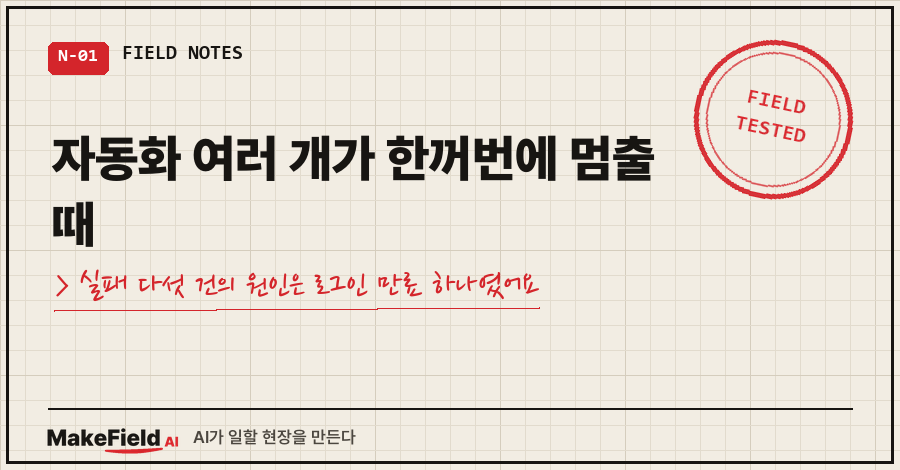
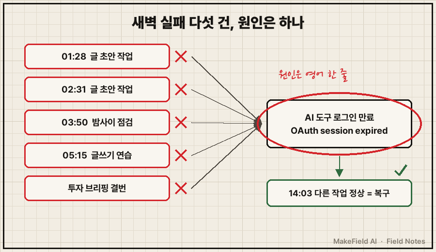
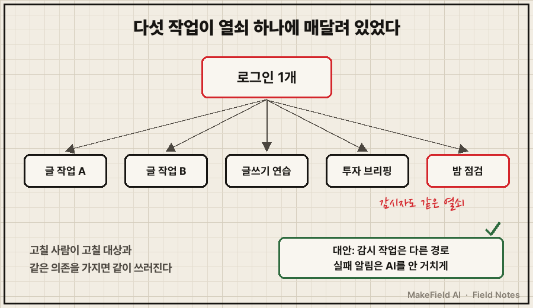
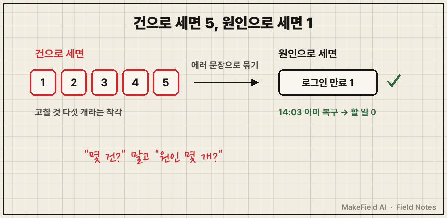

10월 30일 새벽, 제 PC에서 이런 일이 차례로 일어났어요.
- 01:28 글 초안 쓰는 자동 작업, 실패
- 02:31 또 다른 글 작업, 실패
- 03:50 밤사이 점검 작업, 실패
- 05:15 글쓰기 연습 작업, 실패
- 그리고 투자 공부 브리핑은 그날 치가 통째로 비었습니다
자동화 여러 개가 한꺼번에 멈출 때는 고장 다섯 개를 찾지 말고 '같은 영어 한 줄'부터 찾으세요. 제 경우 다섯 건 모두 AI 도구의 로그인 만료(OAuth session expired and could not be refreshed) 하나에서 나왔고, 그 원인 하나도 오후 2시엔 이미 풀려 있었어요.
저는 공장 설비 경보 화면을 15년째 들여다보는 엔지니어입니다. 설비가 멈출 때 경보가 스무 개 뜨면, 그중 맨 처음 뜬 하나만 진짜고 나머지는 따라 넘어진 경우가 많거든요. 퇴근 뒤 집 PC에서 돌리는 AI 자동화에서도 똑같은 일이 벌어질 줄은 몰랐네요..
1. 고치라고 만든 점검 작업이 제일 먼저 쓰러졌어요
제 PC에는 새벽 3시 50분에 도는 점검 작업이 하나 있어요. 밤사이 다른 자동화가 실패했으면 원인을 찾고, 고칠 수 있으면 고치고, 못 고치면 저한테 할 일을 남기는 역할입니다.
그날 그 점검이 남긴 기록은 이랬어요.
실행: 2026-10-30 03:50 / 소요 0.0분 / 턴 1
요약: 실행기 오류: 결과 JSON 없음/파손(FileNotFoundError) — Claude rc=1
원인: Failed to authenticate: OAuth session expired and could not be refreshed
사람 할 일: 실패 원인 봐 달라 (1건)소요 0.0분, 턴 1. 아무것도 못 해 보고 시작하자마자 끝난 거예요.
남의 고장을 고치라고 만든 감시자가, 자기도 같은 열쇠를 쓰고 있어서 같이 쓰러진 겁니다.
05:15 글쓰기 연습 작업 로그는 더 짧아요.
05:15:01 claude -p 호출(최대 60분)
05:15:03 | Failed to authenticate: OAuth session expired and could not be refreshed
05:15:03 rc=1
05:15:03 claude -p 호출(최대 60분)
05:15:05 | Failed to authenticate: OAuth session expired and could not be refreshed
05:15:05 rc=1최대 60분짜리 작업이 2초 만에 두 번 죽었어요.
여기서 claude -p는 AI 코딩 도구(Claude Code)를 사람 없이 명령 한 줄로 부르는 방식이고, rc=1은 "실패로 끝났다"는 종료 코드예요.

2. 밤 11시 점검이 세 건을 '한 줄'로 묶었어요
같은 날 밤 11시 10분, 점검 작업이 다시 돌았어요. 이번엔 로그인이 살아 있었고요.
이 회차는 0.8분, 턴 7번 만에 이렇게 정리했습니다. (내부 작업 이름은 지웠어요)
새벽 실패 2건(01:28·02:31)과 03:50 점검 실패의 원인 =
Claude CLI OAuth 만료(일시 장애), 코드 결함 아님
검증: 14:03 다른 작업이 AI 호출을 정상 완료 → 14시 이전 인증 복구
예약 작업 13개 마지막 결과 0(정상), 수정 없음, 사람 할 일 0새벽 보고는 "할 일 1건", 밤 보고는 "할 일 0건". 같은 사건인데 보고 두 장이 정반대예요.
차이를 만든 건 거창한 분석이 아니었어요. 로그 세 곳에서 똑같은 영어 문장을 찾아 낸 것, 그리고 오후 2시 3분에 다른 작업이 멀쩡히 AI를 부른 기록 하나였습니다.
정리하면 이렇습니다.
| 시각 | 멈춘 작업 | 남은 흔적 | 밤 점검 판정 |
|---|---|---|---|
| 01:28 | 글 초안 작업 | 같은 에러 문장 | 확인 |
| 02:31 | 글 초안 작업 | 같은 에러 문장 | 확인 |
| 03:50 | 밤사이 점검 | 같은 에러 문장, 결과 파일 없음 | 확인 |
| 05:15 | 글쓰기 연습 | 같은 에러 문장 2회 | "추정·미검증" |
| (시각 기록 없음) | 투자 브리핑 | 다음 날 브리핑에 "10/30 결번, 로그인 만료" 고지 | — |
05:15 건은 밤 점검이 자기 담당 범위 밖이라 "추정"으로만 남겼는데, 나중에 그 작업 로그를 따로 열어 보니 위의 같은 문장이 있었어요. 그래서 다섯 건이 됐습니다.
같은 새벽 6시에 실패한 작업이 하나 더 있는데, 그건 로그를 아직 대조하지 못해서 지금도 "추정"으로 둡니다. 다섯에 넣지 않았어요.
참고로 로그인이 어떻게 다시 살아났는지는 기록에 없어요. 제가 손댄 기록도 없고요. 오후 2시 기록에선 이미 돌고 있었다는 것까지만 확실합니다.
3. 요약하던 AI도 다섯을 셋으로 못 셌어요
반전이 하나 더 있어요.
이 사건을 다른 글로 옮기던 AI가 첫 초안에 "밤 점검이 다섯 건을 한꺼번에 묶었다"고 썼습니다. 출처 대조표를 만들다가 걸렸어요. 실제 밤 보고가 묶은 건 세 건이고, 나머지 둘은 "추정·미검증"이었거든요.
장애를 고치는 AI는 원인을 하나로 줄여 주고, 장애를 요약하는 AI는 그 하나를 슬쩍 부풀립니다.
그래서 이 글의 표는 보고서가 직접 묶은 것과 나중에 따로 확인한 것을 칸을 나눠 적었어요. 마지막 열이 그 칸입니다.
4. 다섯 군데를 뒤지기 전에, 에러 문장으로 묶는 법
자동화 여러 개가 한꺼번에 멈출 때, 이번에 효과가 있었던 순서는 이래요.
- 실패한 작업들의 로그에서 에러 문장 원문만 뽑는다
- 같은 문장끼리 묶는다 (건수가 아니라 원인 수를 센다)
- 그 원인이 지금도 살아 있는지, 나중 시각에 정상으로 돈 기록으로 확인한다
2번은 윈도우라면 PowerShell 한 줄이면 돼요. 아래는 제 로그 폴더 구조를 일반화한 예시입니다.
# 로그 폴더 전체에서 같은 에러 문장이 몇 파일에 있는지 묶어 보기 (예시)
Select-String -Path .\logs\*.log -Pattern "OAuth session expired" |
Group-Object Filename | Select-Object Count, Name다섯 군데 로그를 하나씩 열어 원인을 다섯 번 추리하는 방법도 있죠. 저도 새벽 보고만 봤으면 그렇게 했을 거예요. 그런데 그러면 "고칠 것 다섯 개"라는 착각부터 시작하게 됩니다. 문장으로 묶으면 "고칠 것 하나, 그것도 이미 풀림"으로 끝나요.

5. 다음에 또 안 쓰러지려면 뭘 나눠야 하나
설비 쪽에선 이걸 공통원인 고장이라고 불러요. 이중화를 해 놔도 두 계통이 같은 전원 하나에 물려 있으면 같이 꺼지는 경우요. 제 자동화는 이중화도 아니고, 다섯 개가 로그인 하나에 그냥 줄줄이 매달려 있었던 셈입니다.
공식 문서를 찾아보니 쓸 만한 장치가 세 가지 있었어요. (Claude Code 인증 문서, 2026년 11월 확인)
/status화면의 Login 행이 만료되면 "Expired — log in again"으로 바뀐다 → 요청이 실패하기 전에 확인 가능- 로그인 만료 3일 전엔 시작할 때
Your login expires in 3 days · run /login to renew경고가 뜬다 → 다만 시작 화면에 뜨는 경고라, 사람이 안 보는 새벽 작업에선 읽어 줄 사람이 없어요 claude setup-token은 스크립트·CI처럼 브라우저 로그인이 안 되는 곳용으로 1년짜리 토큰을 발급하고,CLAUDE_CODE_OAUTH_TOKEN환경변수로 쓴다
세 번째가 제일 직접적인 해법처럼 보이지만, 토큰 하나로 다섯 개가 매달리는 구조 자체는 그대로예요. 열쇠의 수명이 길어질 뿐이죠. 그래서 토큰보다 먼저 필요한 건 아래 점검표라고 봐요.
- [ ] 내 자동화 중 같은 로그인·토큰을 쓰는 작업이 몇 개인지 목록으로 적었다
- [ ] 그 목록에 감시·점검 작업이 들어 있는지 확인했다
- [ ] 감시 작업이 실패하면, 그 실패 알림은 AI를 거치지 않는 경로로 오게 했다
- [ ] 장애 보고를 받으면 "몇 건?"보다 "원인 몇 개?"를 먼저 묻는다

자주 묻는 질문
Q. OAuth session expired and could not be refreshed가 뜨면 뭘 해야 하나요?
AI 도구의 저장된 로그인이 만료됐고 자동 갱신도 실패했다는 뜻이에요. 공식 문서 기준으로는 /login으로 다시 로그인하는 게 기본 대응이고, 무인 작업이라면 setup-token 토큰을 검토할 만해요. 제 경우엔 어떻게 복구됐는지 기록이 없어서, 복구 방법을 제 경험으로 말씀드리진 못해요.
Q. 실패한 작업들을 바로 다시 돌려야 하나요?
원인이 살아 있는 동안 다시 돌리면 같은 문장으로 또 죽어요. 저는 "나중 시각에 같은 열쇠로 정상 동작한 기록"을 먼저 찾았고, 그게 오후 2시 3분 기록이었어요.
Q. 점검 작업까지 같이 죽는 건 어떻게 알아채나요?
점검 작업이 "결과 파일 없음"이나 "소요 0분"으로 끝났으면 의심하세요. 일을 하다 실패한 게 아니라 시작도 못 한 거라서, 그 점검이 남긴 "할 일"은 원래 장애가 아니라 점검 자신의 장애일 수 있어요.
경보 스무 개 중 첫 경보 하나를 찾는 일, 공장에서 15년 한 걸 집 PC 앞에서 다시 배웠습니다. 다음에 자동화 여러 개가 한꺼번에 멈추면, 다섯 군데를 열기 전에 영어 문장 하나부터 찾아보세요.
밤사이 제 PC에서 넘어진 자동화가 어디서 어떻게 넘어졌는지는 makefield.ai에 원본 기록째로 붙여 둡니다.
출처
- Claude Code 인증 문서(로그인 갱신·/status·setup-token) → https://code.claude.com/docs/en/authentication
- Select-String → https://learn.microsoft.com/en-us/powershell/module/microsoft.powershell.utility/select-string
태그: #자동화여러개한꺼번에멈출때 #자동화동시실패 #OAuthsessionexpired #로그인만료 #claude로그인만료 #클로드코드 #claude-p #setup-token #자동화장애원인 #공통원인고장 #단일장애점 #작업스케줄러 #자동화로그분석 #무인자동화 #MakeFieldAI